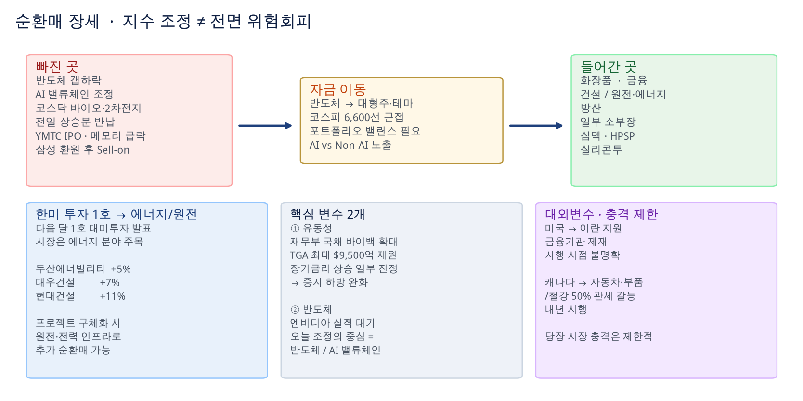
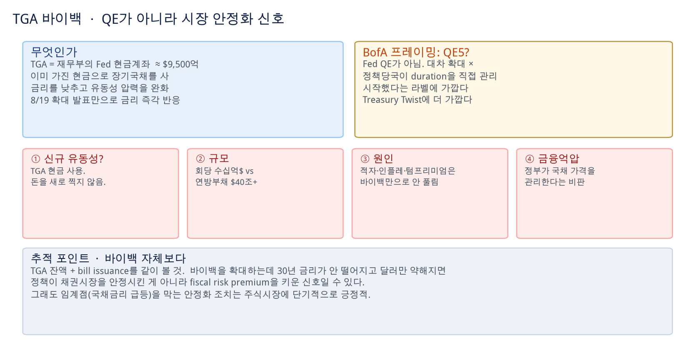
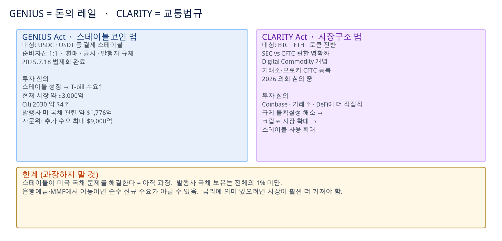
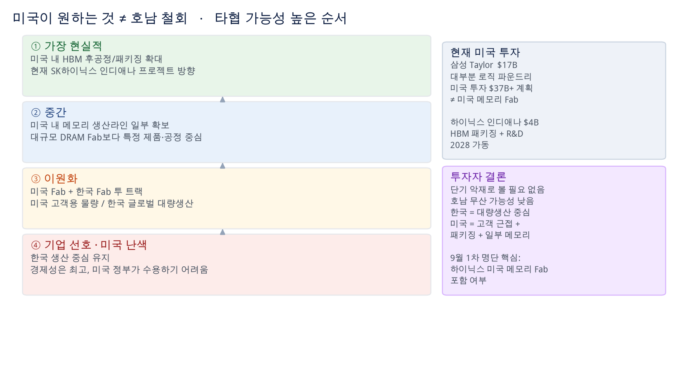
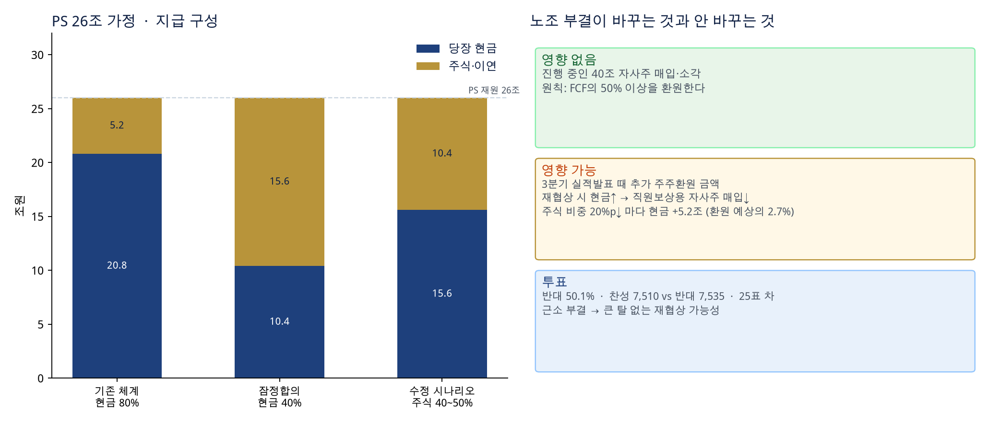
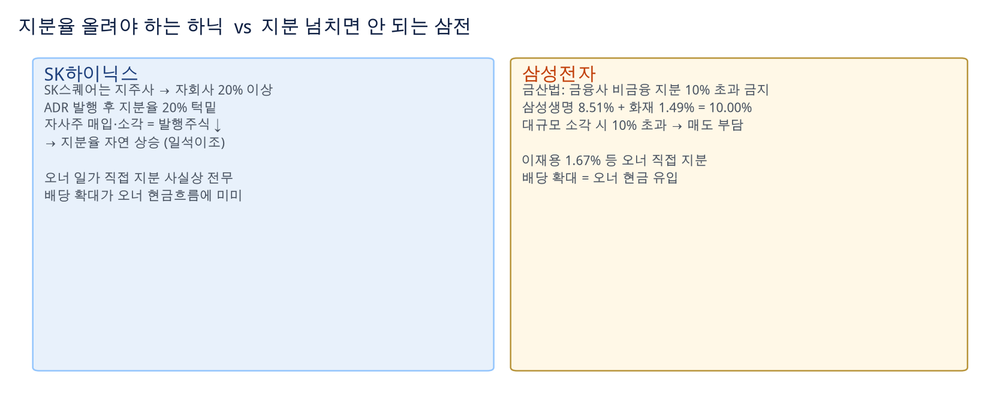
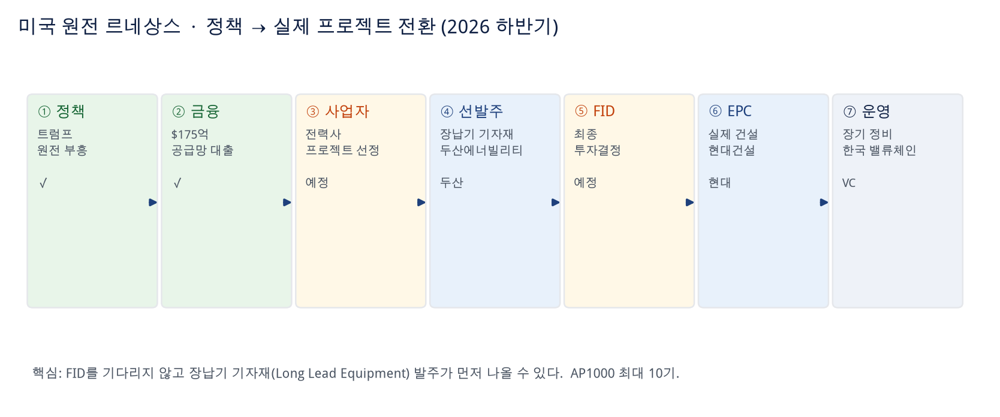
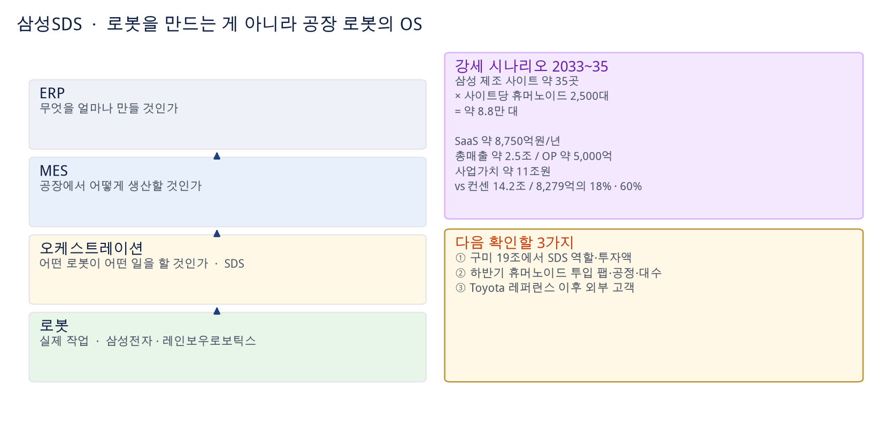
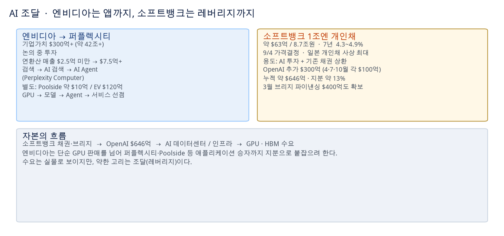
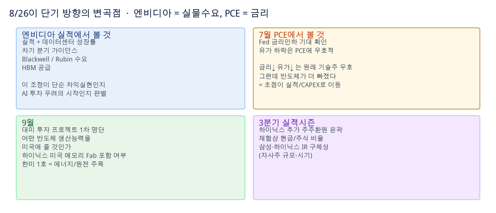

순환매 장세 지속
반도체/AI에서 빠진 자금이 금융·에너지·방산·화장품·일부 소부장으로 이동. 매수·매도 추천 아님.
0. 한 장으로 읽는 오늘
1. 국내 장세 — 순환매
원문 시각: 11:24

반도체에서 빠진 자금이 대형주·테마로 이동. 지수는 조정이지만 전면 위험회피가 아니다.
코스닥: 바이오·2차전지 등 전일 주도주 급락, 전일 상승분 반납.
한미 투자 → 에너지/원전 (오늘 가장 주목)
| 종목 | 등락 | 읽기 |
|---|---|---|
| 현대건설 | +11% | 미국 전력사업자 주도 원전 EPC 파이프라인 |
| 대우건설 | +7% | 한미 투자협력 프로젝트 기대 |
| 두산에너빌리티 | +5% | 장납기 기자재 선발주 수혜 1순위 |
대외변수 — 현재는 시장 충격 제한적
2. 하룻밤 미국장 — 금리↓ 유가↓ 그런데 반도체↓↓
원문 시각: 06:24

원래 기술주에 우호적인 매크로인데, 반도체 매도가 이를 압도했다.
| 지수·종목 | 등락 | 가격 / 메모 |
|---|---|---|
| 다우 | +0.26% | 상대적 방어 |
| S&P500 | −0.28% | 소폭 조정 |
| 나스닥 | −0.77% | 기술주 약세 |
| SOX | −2.7% | 반도체 전반 조정 |
| 엔비디아 | −2.9% | 실적 앞 차익실현 |
| 마이크론 | −5.8% | $910.43 · 메모리 조정 확대 |
| 샌디스크 | −6.5% | $1,493.12 · AI 데이터센터 우려/차익실현 |
| SK하이닉스 ADR (SKHY) | −4.9% | $155.37 · 한국 메모리에도 부담 |
3. 유동성 — TGA 바이백은 QE가 아니다
원문 시각: 06:47 · 07:02 · 07:03 · 07:04 · 08:42

신호는 중요하다. 규모와 재정적자는 한계다. 추적 대상은 바이백보다 TGA + bill issuance.
TGA가 뭔가
무엇을 하는가 / 무엇을 하지 않는가
BofA식 라벨: QE5인가, Treasury Twist인가
비판 논리 — 타당하지만, 임계를 막는 조치는 주식에 단기 긍정
| # | 비판 | 요지 |
|---|---|---|
| 1 | 진짜 유동성 공급인가? | 새 돈을 찍지 않는다. TGA 현금을 쓰는 것. Fed QE와 다르다. |
| 2 | 규모가 작다 | 회당 수십억 달러 vs 연방부채 $40조+. Reuters도 효과가 일시적일 수 있다고 지적. |
| 3 | 진짜 원인을 안 건드린다 | 재정적자 · 국채 발행 · 부채 · 인플레 · 텀프리미엄이면 조금 사준다고 안 풀린다. 가장 강한 반대 논리. |
| 4 | 금융억압? | 정부가 국채 가격을 관리하는 것 아니냐. financial repression 성격이라는 비판. |
| 5 | TGA를 너무 쓰면? | TGA는 현금 버퍼. 너무 낮추면 나중에 다시 국채를 발행해 채워야 하고, 그때 TGA↑ → 금융시스템 유동성↓가 재발할 수 있다. 전액 투입 여유자금이 아니다. |
4. 스테이블코인 · GENIUS · CLARITY
원문 시각: 08:06 · 08:08 · 08:30 · 07:58

GENIUS는 달러와 1:1인 디지털 화폐의 발행 규칙. CLARITY는 그 위에서 거래되는 자산 시장의 교통법규.
| GENIUS Act | CLARITY Act | |
|---|---|---|
| 역할 | 스테이블코인 법 · “돈의 레일” | 디지털자산 시장구조 법 · “교통법규” |
| 대상 | Payment Stablecoin (USDC, USDT) | BTC, ETH, 토큰, 거래소·브로커 |
| 핵심 | 준비자산 1:1, 환매, 공시, 발행자 규제 | SEC vs CFTC, Digital Commodity, CFTC 등록 |
| 시점 | 2025.7.18 법률 제정 | 2026 의회 심의 중 |
| 투자 함의 | 국채·스테이블에 직접적. T-bill 수요 | Coinbase·거래소·DeFi·BTC/ETH에 더 직접적 |
규모
- 현재 스테이블코인 시장 약 $3,000억
- Citi 전망 2030년 약 $4조
- 발행사들의 미 국채 관련 자산 약 $1,776억
- 미 재무부 자문위: 빠르게 성장하면 단기국채 추가 수요 최대 $9,000억
5. 호남 반도체 · 미국의 메모리 Fab 압박
원문 시각: 10:27 · 10:36 · 10:40 · 10:42

미국이 원하는 것은 호남 철회가 아니라, 초대형 투자 중 일부를 미국으로 가져오는 것이다.
출처: wallstreetcn.com/articles/3780198
사실관계는 타당, “호남 때문에 미국이 화났다”는 과장
기업 입장 — 미국 메모리 Fab은 경제성이 떨어진다
| 회사 | 현재 미국 투자 | 성격 | 미국이 더 원하는 것 |
|---|---|---|---|
| 삼성전자 | 텍사스 Taylor $17B 신규 Fab, 미국 투자 $37B+ 계획. Austin + Taylor 제조 기반 | 대부분 로직 파운드리. 삼성 미국 투자 ≠ 미국 메모리 Fab | 기존 Taylor 인프라로 메모리 생산 추가 검토 여지가 하이닉스보다 큼 |
| SK하이닉스 | 인디애나 웨스트라파예트 약 $4B, 2028 가동 | HBM 후공정/패키징 + R&D. 한국 용인·청주·호남과 보완 구조 | 한 단계 더 나아간 미국 내 메모리 웨이퍼 Fab. 중장기 CAPEX 배분이 바뀔 수 있음 |
최종 타협안 — 가능성 높은 순서
- 미국 내 HBM 후공정/패키징 확대 — 가장 현실적. 현재 인디애나 방향.
- 미국 내 메모리 생산라인 일부 확보 — 완전한 대규모 DRAM Fab보다 특정 제품·공정 중심의 제한적 생산.
- 미국 Fab + 한국 Fab 이원화 — 미국 고객용 / 한국 글로벌 대량생산.
- 한국 생산 중심 유지 — 기업엔 가장 경제적, 미국 정부가 받아들이기 어려울 가능성 큼.
투자자 결론
향후 구조: 한국 = 메모리 대량생산 중심 / 미국 = AI 고객 근접 생산 + 패키징 + 일부 메모리. 미국이 한국 메모리를 “뺏어가는가” — 그렇게 보지 않는다.
삼성: 상대적으로 유리. 이미 Austin + Taylor. 요구 시 Taylor로 메모리 추가 검토 여지가 더 크다.
6. SK하이닉스 — 노조 부결, PS, 지배구조, IR
원문 시각: 09:09 · 09:14 · 09:27 · 09:45 · 09:50 · 10:17

40조 소각과 FCF 50%+ 원칙은 유지. 움직이는 것은 3분기 추가 환원의 현금/주식 믹스.
연합뉴스 · 임단협 부결 후폭풍
“주주환원에 제동”은 절반만 맞는 표현
- 현재 진행 중인 40조원 자사주 매입·소각에는 영향 없음
- 영향 가능성이 있다면 회사가 3분기 실발 때 발표하기로 한 추가 주주환원
- 그 경우에도 ‘FCF의 50% 이상을 환원한다’ 원칙 자체에는 영향 없음
- 최종 환원금액이 얼마가 되느냐에 다소 영향 가능
- 추후 협상에서 현금 지급 비율이 증가하면 그만큼 직원보상용 자사주 매입 규모가 줄어듦
- 반대표 50.1%로 근소 → 큰 탈 없는 재협상은 가능하지 않을까
핵심 계산 — 2026 영업이익 260조 가정
| 항목 | 숫자 |
|---|---|
| PS 재원 | 영업이익의 10% → 26조원 |
| 기존 체계 | 80% 현금 + 20% 현금 이연 |
| 잠정합의안 | 40% 현금 + 60% 자사주(주식) |
| 당장 현금 비율 | 80% → 40%, 40%p 감소 |
| 현금 유출 감소 | 26조 × 40%p = 10.4조원 (당초 주주환원 예상의 5.4%) |
| 재협상 시나리오 | 주식 60% → 40~50%가 중요한 시나리오 |
| 주식 비중 20%p↓ 마다 | 회사 현금 부담 +5.2조 (환원 예상의 2.7%) |
지분율 올려야 하는 하닉 vs 지분 넘치면 안 되는 삼전

같은 자사주 소각이 한쪽에선 일석이조, 한쪽에선 규제 위반 리스크다.
- SK하이닉스: 공정거래법상 지주사 SK스퀘어는 자회사 지분 20% 이상. 지난달 미국 ADR 발행으로 20% 턱밑. 자사주 매입·소각 → 발행주식 수↓ → 지분율 자연 상승.
- 삼성전자: 금산법상 금융회사는 비금융 계열사 지분 10% 초과 금지. 6월 말 삼성생명 8.51% + 삼성화재 1.49% = 정확히 10.00%. 대규모 소각 시 10% 초과 → 두 계열사가 삼성전자 주식을 시장에 내다 팔아야 하는 부담.
- 오너 현금흐름: 하이닉스는 최태원 회장 등 오너 일가 직접 지분이 사실상 전무 → 배당 확대가 오너 현금흐름에 미미. 삼성은 이재용 1.67% 등 오너 일가가 직접 보유 → 배당 확대 시 직접 현금 유입.
출처: etoday.co.kr/news/view/2617536
IR 방식 논란
hankyung.com/article/2026082504946
7. 미국 원전 르네상스 · 한국 밸류체인
원문 시각: 09:45 · 11:24와 연결

2026 하반기 = 정책·금융 설계에서 사업자·부지 확정, 실제 프로젝트 착수로 넘어가는 전환점.
트럼프 정부의 승부수: $175억 저리 대출
- 미국 정부 → 원전 공급망에 $17.5B 금융 지원
- 최대 웨스팅하우스 AP1000 10기 건설 지원
- 핵심은 발전소 건설비 자체보다 장납기 기자재(Long Lead Equipment) 선구매
- “발주가 없으니 공급망 투자가 없고 → 공급망이 없으니 발주가 어려운” 닭·달걀 문제를 정부 금융으로 풀겠다는 전략
- 2030년경 착공 목표로 프로젝트를 앞당기는 효과
- 투자 포인트: FID를 기다리지 않고 기자재 발주가 먼저 나올 수 있다
왜 미국이 지금 원전인가
원전은 「전력 + 안보 + 일자리」를 동시에 해결하는 정책 카드.
웨스팅하우스가 핵심인 이유
8. 삼성SDS — 공장 로봇의 총감독
원문 시각: 08:42 · 08:44 · 08:47 · 08:48 · 중장기 관점 적절. 기본 용어는 SKIP 가능

SDS의 로봇 투자는 로봇 제조업이 아니라, 삼성 제조 생태계의 ‘로봇 OS’를 장악하려는 전략.
사업의 본질
- 휴머노이드·AMR·협동로봇 등 이종 로봇 수천 대 통합 관제
- MES와 연동 → 생산계획에 따라 로봇 임무를 실시간 배정
- 위치·상태 관제 / 충돌 방지 / 디지털트윈 사전검증
- VLA AI 모델 업데이트 + 엣지 GPU 기반 저지연 제어
- 핵심 경쟁력 = 로봇 자체가 아니라 ‘누가 언제 무엇을 할지’ 결정하는 지휘권
- 삼성 제조 MES를 장기간 운영해온 SDS의 기존 고객·시스템 장악력이 진입장벽
용어 — MES
ERP = 회사 전체 경영·자원 계획 (“이번 달 반도체 100만 개 생산하자”).
MES = 실제 공장의 생산 실행 지휘 (“지금 이 웨이퍼를 3번 장비로 보내고, 다음 공정은 5번 장비”).
ERP → MES → 로봇 오케스트레이션 → 로봇. SDS 로봇 오케스트레이션에서 MES 연동이 중요한 이유는, 로봇을 단순히 관제하는 것이 아니라 공장의 실제 생산계획과 직접 연결할 수 있기 때문.
그룹 역할 분담
| 삼성전자 | 삼성SDS |
|---|---|
| 로봇의 몸 | 로봇의 지휘·운영 소프트웨어 |
| 레인보우로보틱스 / 휴머노이드 양산 | 로봇 오케스트레이션 / MES 연동 |
| 로봇 학습 데이터 / 제조 현장 적용 | 디지털트윈·GPU 인프라 / 중앙 관제·운영 |
“삼성전자가 로봇을 만들고, SDS가 공장 전체를 움직인다.” 삼성전자가 로봇을 많이 만들수록 SDS 지휘 소프트웨어 가치가 커지는 구조.
이미 나타난 시그널
- SDS: 미국 Walden Robotics 전략투자
- Walden: Toyota 북미 생산라인에서 로봇 실운용 레퍼런스
- SDS 경영진: “다양한 로봇 통합·제어 + MES 연계” 사업 공식화
- 삼성전자: 레인보우로보틱스 최대주주 + 휴머노이드 제조현장 투입 추진
- 구미 투자: 휴머노이드 양산 + 로봇 데이터 팩토리 추진
- 캡티브 삼성 → Toyota 등 외부 제조사로 확장할 수 있는 구조
NVIDIA 피지컬 AI 생태계
비즈니스 모델: 하드웨어가 아니라 반복 매출
| 단계 | 내용 | 규모 |
|---|---|---|
| ① 초기 구축 | 디지털트윈 + MES 연동 + 엣지 인프라 | 사이트당 300~500억원 |
| ② SaaS | 로봇 관제·오케스트레이션 | 대당 월 구독료. 로봇 대수 증가 = 매출 자동 증가 |
| ③ MSP | 엣지 GPU·디지털트윈 운영 | 연간 반복 매출 |
일회성 SI → SaaS + MSP 반복매출로 사업구조 고도화. 현재 로봇 사업의 실적 기여는 미미. 향후 삼성 제조공장의 로봇 표준 플랫폼, 장기 Toyota 등 외부로 확장.
강세 시나리오 2033~35
vs 현재 삼성SDS 컨센서스 매출/영업이익 14.2조 / 8,279억의 18% / 60%.
9. AI 조달 — 소프트뱅크 레버리지, 엔비디아의 앱 선점
원문 시각: 07:12 (두 건) · 09:26

수요는 실물로 보이지만, 약한 고리는 조달(레버리지)이다.
소프트뱅크 1조엔 개인 엔화채
- 1조엔 ≈ 약 $63억 / 8.7조원. 개인투자자 대상. 7년 만기, 예상 금리 4.3~4.9%. 9월 4일 가격 결정
- 일본 기업의 개인 대상 회사채로는 사상 최대
- 용도: ① AI 관련 투자 ② 기존 채권 상환. 시장은 OpenAI 투자 확대와 AI 인프라 자금 조달에 주목
- OpenAI 추가 투자: 2026년 2월 추가 $300억 확정. 3회 × $100억 — 1차 2026.4 / 2차 2026.7 / 3차 2026.10
- 3차까지 완료 시 누적 약 $646억, 지분율 약 13%
- 2026년 3월 OpenAI 추가 투자 등을 위해 $400억 규모 브리지 파이낸싱도 확보
엔비디아 → 퍼플렉시티 투자 논의
- Perplexity 기업가치 $300억 이상 신규 라운드 논의. 원화 약 42조원 이상
- 연환산 매출 $2.5억 미만 → $7.5억 이상으로 급증. 핵심은 Perplexity Computer라는 AI Agent 서비스
- 검색 → AI 검색 → AI Agent 전환의 초기 단계부터 지분 확보
- 별도: AI 코딩업체 Poolside에도 약 $10억 투자 논의/진행, 기업가치 약 $120억
10. 앞으로 볼 것

오늘 조정이 차익실현인지 AI 투자 우려의 시작인지는 8/26이 판별한다.
| 때 | 이벤트 | 보면 |
|---|---|---|
| 8/26 | 엔비디아 실적 | 데이터센터 성장률, 차기 분기 가이던스, Blackwell/Rubin 수요, HBM 공급 |
| 8/26 | 7월 PCE | Fed 금리인하 기대. 유가 하락은 PCE에 우호적 |
| 9월 | 대미 투자 1차 명단 | 하이닉스 미국 메모리 Fab 포함 여부. 한미 1호 = 에너지/원전인지 |
| 3분기 실발 | 하이닉스 추가 환원 | 재협상 현금/주식 비율. 삼성·하이닉스 IR의 자사주 규모·시기 구체성 |
| 상시 | TGA · bill issuance · 30년 금리 · 달러 | 바이백 확대에도 30년↑·달러↓면 fiscal risk premium 신호 |
부록. 원문 Quick 코멘트 전체 (시간순)
06:24 → 11:24. 위에서 주제별로 재배치한 원문을 빠짐없이 보관.
11:24 순환매 장세 지속
핵심 흐름: 지수 조정 ≠ 전면적 위험회피 → 자금이 반도체에서 금융·에너지·방산·화장품 등으로 이동.
시장의 핵심 변수 = 유동성 + 반도체.
① 유동성: 美 재무부 국채 바이백 확대. TGA를 통한 최대 9,500억 달러 재원 조달 가능성 보도. 장기금리 상승세 일부 진정 → 유동성 측면은 증시 하방을 완화하는 요인.
② 반도체: Nvidia 실적 대기. 삼성전자 주주환원 발표 이후 Sell-on. YMTC IPO 임박. 메모리주 급락. 오늘 조정의 중심은 반도체/AI 밸류체인.
반도체 약세에도 순환매는 뚜렷. 포트폴리오 밸런스 및 기민한 대응 필요 이유 — AI exposure vs Non AI (건설 화장품 조선 바이오 2차전지 등). 화장품, 금융, 건설/원전·에너지, 일부 소부장(심텍, HPSP 등) 강세, 실리콘투. → 반도체에서 빠진 자금이 다른 대형주·테마로 이동.
가장 주목할 부분: 한미 투자 → 에너지/원전. 다음 달 1호 대미투자 프로젝트 발표 예정. 시장은 에너지 분야에 주목. 두산에너빌리티 +5%, 대우건설 +7%, 현대건설 +11%. 한미 투자협력의 구체적인 프로젝트가 발표될 경우 → 원전·전력 인프라 관련주로 추가 순환매 가능.
대외변수: 현재는 시장 충격 제한적. 미국 → 이란 지원 금융기관 제재. 캐나다 → 자동차·부품/철강 50% 관세 갈등. 그러나 이란 제재의 구체적 시행 시점 불명확. 캐나다 관세는 내년 시행 → 당장 시장 충격은 제한적.
10:42 호남 과잉반응은 타당하지 않다
10:40 분위기 자체는 주가에 부정 · 소부장은 good news
10:36 호남·대미 Fab 이슈 전체 분석
1. 사실관계: 미국의 압박은 실제로 존재. 7월 러트닉 상무장관이 마이크론 행사에서 삼성·하이닉스를 거론하며 미국 생산시설을 원한다고 발언. 8월에는 “대미 투자 1호 사업으로 메모리를 달라”는 요구가 협상 과정에서 제기됐다는 보도. 미국 → 한국 메모리 기업의 미국 생산 확대 요구 자체는 신빙성이 높음.
2. “호남 때문에 미국이 화났다”는 것은 절반만 맞음. 미국의 공급망 안보, 일자리·투자, AI용 HBM 안정 공급, 리쇼어링이 먼저. 한국이 용인+청주+호남 수백조~1,100조 벨트를 발표하니 “왜 미국에는 메모리 생산능력을 더 안 가져오느냐”고 요구할 구조. 김용범 정책실장은 국내 팹 증설은 국가 프로젝트라고 강조.
3. 미국 논리는 강함. HBM은 과거 일반 DRAM과 다름. 빅테크 AI CAPEX가 HBM 부족에 영향받을 수 있음. 국가안보·AI 공급망 안보 논리가 붙음.
4. 한국 기업 입장에서 미국 메모리 Fab은 쉽지 않음. 삼성 Taylor $17B는 대부분 로직 파운드리, 미국 투자 $37B+ 계획. 삼성 미국 투자 ≠ 미국 메모리 Fab. 하이닉스 인디애나 $4B는 HBM 패키징+R&D, 2028 가동. 미국이 원하는 것은 미국 내 메모리 웨이퍼 Fab.
5. 미국 메모리 Fab 경제성이 떨어짐. 원가+규모+클러스터. HBM 공정이 긴밀히 연결. 한국 라인 추가가 미국에서 생태계를 새로 만드는 것보다 경제적. 하이닉스도 용인·청주·호남 + 인디애나 패키징 보완 구조.
6. 타협안 가능성 순: ① 미국 HBM 후공정/패키징 확대(가장 현실적) ② 미국 내 메모리 라인 일부 ③ 미국+한국 이원화 ④ 한국 생산 중심 유지(미국 수용 어려움).
7. 9월이 중요. “얼마를 투자할 것인가”보다 “어떤 반도체 생산능력을 미국에 줄 것인가.” 메모리 Fab을 명시 요구하면 삼성과 하이닉스 대응이 달라질 수 있음.
8. 투자자 결론: 단기 악재로 볼 필요 없음. 장기적으로 흥미로운 변화. 하이닉스 한국 대량생산 + 미국 패키징/R&D. 압박 시 미국 HBM 생산 추가 가능(단기 CAPEX, 장기 lock-in). 삼성은 Austin+Taylor로 상대적으로 유리.
9. 미국이 한국 메모리를 뺏어가는가 — 그렇게 보지 않음. 한국=대량생산 중심, 미국=고객 근접+패키징+일부 메모리. 호남 무산·대폭 축소 가능성 낮음. 산업부도 용인 완공 앞당기기 공식화.
한 줄: “미국의 압박은 사실이고 앞으로 더 강해질 가능성이 높다. 그러나 미국이 원하는 것은 호남 투자의 철회가 아니라, 한국의 메모리 초대형 투자 중 일부를 미국으로 가져오는 것이다.” 하이닉스에 특히 중요 — 지금까지 미국 투자가 인디애나 패키징에 집중됐는데, 진짜 메모리 Fab을 요구하기 시작했다면 중장기 CAPEX 배분 자체가 바뀔 수 있음. 9월 1차 명단에서 가장 주목할 것은 하이닉스 미국 메모리 Fab 포함 여부. 포함되면 국내 투자 축소보다 추가 CAPEX와 HBM 공급능력 확대 효과를 먼저.
10:27 중국 매체 보도 요약
10:17 PS 잠정합의안 계산
09:50 노조 부결과 주주환원 — 절반만 맞다
09:45 삼전닉스 IR 논평
09:45 미국 원전 르네상스 전체
트럼프 승부수: $175억 저리 대출. 최대 AP1000 10기. 핵심은 장납기 기자재 선구매. 닭·달걀 문제를 정부 금융으로 풀겠다는 전략. 2030년경 착공 목표. FID를 기다리지 않고 기자재 발주가 먼저 나올 수 있다.
왜 지금 원전인가: ① AI·데이터센터 24시간 전력 ② 에너지 안보(중·러 경쟁) ③ 정치적 고용. 전력+안보+일자리. 중간선거 전 발표 집중 가능.
웨스팅하우스 AP1000이 중심축. 정부 금융 → 전력사 → AP1000 → 글로벌 발주 → 한국 기자재·EPC. 한국 기업의 원자로 제작·건설 능력을 활용할 유인.
두산에너빌리티: 가장 먼저 기자재 수주가 보일 가능성. 현대건설: 프로젝트 파이프라인 확대, 글로벌 원전 EPC.
파이프라인: ①정책✓ ②금융 $175억✓ ③사업자 🔜 ④선발주 두산 ⑤FID 🔜 ⑥EPC 현대건설 ⑦운영 한국 밸류체인.
09:26 무엇을 준비 중인가?
09:09 지분율 올려야 하는 하닉 vs 넘치면 안 되는 삼전
08:48 · 08:47 · 08:44 · 08:42 삼성SDS 로봇 오케스트레이션 전체 + MES 용어
이 종목은 중장기 관점 적절. 본질은 공장 로봇의 총감독. 이종 로봇 수천 대 통합, MES 연동, 디지털트윈, VLA, 엣지 GPU. 핵심 경쟁력은 지휘권. 삼성 MES 장악력이 진입장벽.
전자=몸, SDS=지휘 SW. Walden 전략투자, Toyota 북미 레퍼런스, 구미 휴머노이드 양산+데이터 팩토리. NVIDIA 피지컬 AI 스택.
BM: 사이트당 구축 300~500억, SaaS 대당 월 구독, MSP 반복매출. 강세 시나리오 2033~35: 35곳×2,500대=8.8만, SaaS 8,750억/년, 총매출 2.5조, OP 5,000억, 사업가치 11조. vs 컨센 14.2조/8,279억의 18%/60%.
확인할 3가지: 구미 19조에서 SDS 역할·투자액, 하반기 휴머노이드 투입 팹·공정·대수, Toyota 이후 외부 고객. “SDS의 로봇 투자는 로봇 제조업이 아니라 삼성 제조 생태계의 로봇 OS를 장악하려는 전략.”
08:42 · 08:30 · 08:08 · 08:06 · 07:58 QE5 / GENIUS / CLARITY / 스테이블·국채
BofA식 프레이밍이 2026년을 QE5로 붙인 것은, 정책당국이 duration 부담을 떠안기 시작했고 또 하나의 유동성/자산가격 사이클의 시작일 수 있다는 것. QE5 라벨은 Fed QE가 아니라 정책당국이 장기금리와 duration을 직접 관리하기 시작했다는 의미로 읽는 게 정확. Treasury Twist에 더 가깝다.
GENIUS Act = 스테이블코인 법 (USDC/USDT, 1:1 준비자산, 2025.7.18 법제화). CLARITY Act = BTC·ETH 등 디지털자산 시장구조 법 (2026 심의 중, SEC vs CFTC, Digital Commodity). GENIUS는 돈의 레일, CLARITY는 교통법규. GENIUS → T-bill 수요, CLARITY → Coinbase·거래소·DeFi에 더 직접적.
기사 프레임: 단기국채 발행↑ + 장기국채 바이백↑. 늘어난 T-bill을 누가 사나 → 스테이블. 시장 약 $3,000억, Citi 2030 $4조, 발행사 국채 관련 $1,776억, 자문위 추가 수요 최대 $9,000억. 한계: 국채 문제 해결은 과장, 보유 1% 미만, MMF 이동이면 신규 수요 아님. 원문 기사
07:12 소프트뱅크 1조엔 채권 · 엔비디아-퍼플렉시티
엔비디아가 Perplexity 투자 논의. 기업가치 $300억+(약 42조+). 연환산 매출 $2.5억 미만 → $7.5억+. Perplexity Computer AI Agent. Poolside 약 $10억 / EV $120억. GPU → 모델 → Agent → 서비스 선점.
07:04 · 07:03 · 07:02 · 06:47 TGA 비판 논리와 정의
비판은 타당하지만, 이런 조치가 주식에 단기적으로 긍정인 것은 맞다. 임계점(국채금리 상승)을 못 막으면 그때는 위기. 안정화 조치가 없었다면 주식에 좋았을 리 없다.
TGA 바이백은 돈을 새로 찍어내는 QE라기보다, 쌓아둔 현금으로 장기국채 수요를 만들어 금리를 낮추고 유동성 압력을 완화하는 시장 안정화. 진짜 포인트는 “장기금리 상승을 방치하지 않겠다”는 신호. 8/19 발표만으로 금리 즉각 반응. 다만 적자·국채 공급 자체가 줄지 않으면 하락 효과는 제한적.
TGA = Treasury General Account. 재무부의 Fed 현금계좌. 최근 약 $9,500억. 정부의 은행계좌.
06:24 하룻밤 미국장 정리
다우 +0.26% 상대적 방어. S&P500 −0.28% 소폭 조정. 나스닥 −0.77% 기술주 약세. SOX −2.7% 반도체 전반. 엔비디아 −2.9% 실적 앞 차익실현. 마이크론 −5.8% $910.43. 샌디스크 −6.5% $1,493.12. SKHY −4.9% $155.37.
① 금리: 10년 4.704%(−3bp), 30년 5.234%(−4bp). TGA 바이백 재원 부각. 금리 측면은 우호적이었지만 반도체 매도가 압도.
② 반도체: 금리보다 AI 투자/밸류에이션 부담. 하루 조정을 AI CAPEX 둔화로 읽기는 이르다. 핵심이 엔비디아 실적.
③ 8/26이 가장 중요. 엔비디아=AI 수요의 실물 확인, PCE=금리 방향 확인.
④ 유가: 이란 제재에도 하락. WTI $85.01 / Brent $92.17 (−2.35%). PCE에 우호적.
현재 시장은 금리 상승 리스크보다 AI 주가의 높은 기대치를 시험. 장기금리↓ 유가↓는 원래 기술주 우호인데 반도체↓↓↓. 초점이 엔비디아 실적/AI CAPEX로 이동. 체크포인트: 실적 + 데이터센터 성장률 + 가이던스 + Blackwell/Rubin + HBM 공급. 이 조정이 단순 차익실현인지 AI 투자 우려의 시작인지 판단할 핵심.